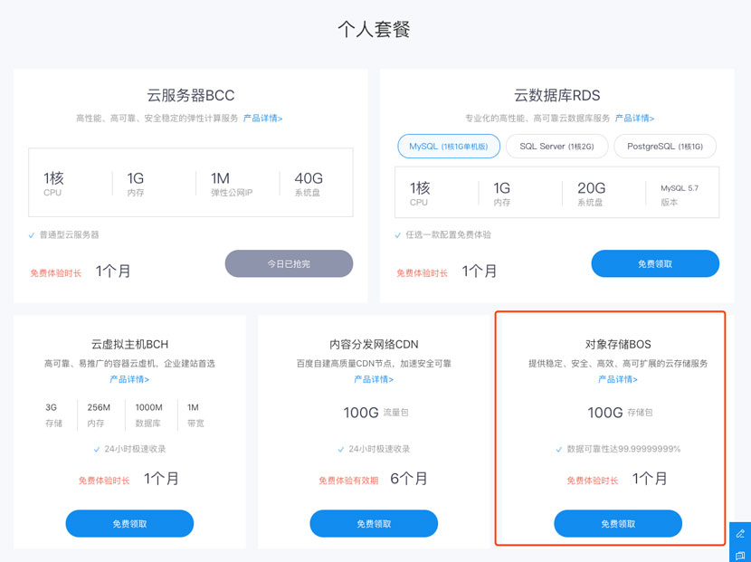

事情的起因是这样的，前几天逛掘金的时候看到一个百度云的一个推广，虚拟主机只要6块钱3个月，没事点进链接看了下，由于已经买了国外的VPS部署博客，但访问有点慢，就想看下对象储存BOS托管静态站。

在0元购买一个月体验包后，我进入管理后台创建一个Bucket，结果一直提示我创建失败：
我就有点纳闷了，怎么一直失败呢？难道我填的参数不对？不过这个提示至少说明下原因吧！错了总得告诉别人那里错了，不然我该怎么改？本能的打开Devtools看下接口有没有返回报错原因:
果然不出所料，提示Bucket名称已经被使用，难道是因为CDN官方加速域名是唯一的，已经有人使用了blog这个域名？结果创建完后查看配置发现，百度云给每个Bucket分配了一个官方域名来访问：test-blog.gz.bcebos.com
哈哈，居然不加个hash防止重名，或者在创建的时候至少加一个异步重名校验吧。
在基础配置开启静态网站托管配置后，我想把博客上传到这个Bucket，在文件列表这个TAB里面支持浏览器上传文件，但是不支持文件夹，作为一个程序员，更希望使用的当然是命令行工具了。不过页面并没有任何上传工具的介绍，只能去翻一翻文档了。终于找了半天，在一个工具下载专区找到一个命令工具；
下载来一看，居然直接是一个可执行文件，让我把这个命令加入到path环境变量中，为什么不是一个npm包啊？虽然考虑到使用者不一定是个前端，没有安装npm，但再怎么也应该是一个shell，一键安装吧。有得用还是算了吧。。。
按照文档在设置完Access Key、Secure Key后，开始使用bcecmd上传文件，首先看一下–help:
我应该bos sync命令，再看看bcecmd bos sync --help
1 | usage: bcecmd bos sync <SRC> <DST> [--exclude EXCLUDE] [--include INCLUDE] [--delete] [--exclude-delete EXCLUDE-DELETE] [--dryrun] [--yes] [--quiet] [--storage-class STORAGE-CLASS] [--sync-type SYNC-TYPE] [--download-tmp-path DOWNLOAD-TMP-PATH] [--concurrency CONCURRENCY] [--restart] |
这个help看的我也是一脸懵逼，所以我到底要怎么写？为啥不给个例子？SRC 我还能理解，是我本地的文件路径，DST我要怎么填？没办法，还是去翻文档，终于找到DST应该是bos:/bucket/path/*这种协议。
至此，我终于把我的博客上传到了对象储存服务器， 可以围观一下：https://wulv-blog.bj.bcebos.com，速度还可以。搭配上自定义域名的话，就更完美了，可惜我的域名没备案，无法配置。还是要吐槽一下百度的产品和程序员，做出来的东西实在有点糙。一直认为前端应该是产品交付到用户的最后一道关，没有把好这道关，那些不合理的地方就真的交付给用户使用了，而结果就是要不然用户骂着用，要不然就不用了。
 支付宝打赏
支付宝打赏
 微信打赏
微信打赏
赞赏一下